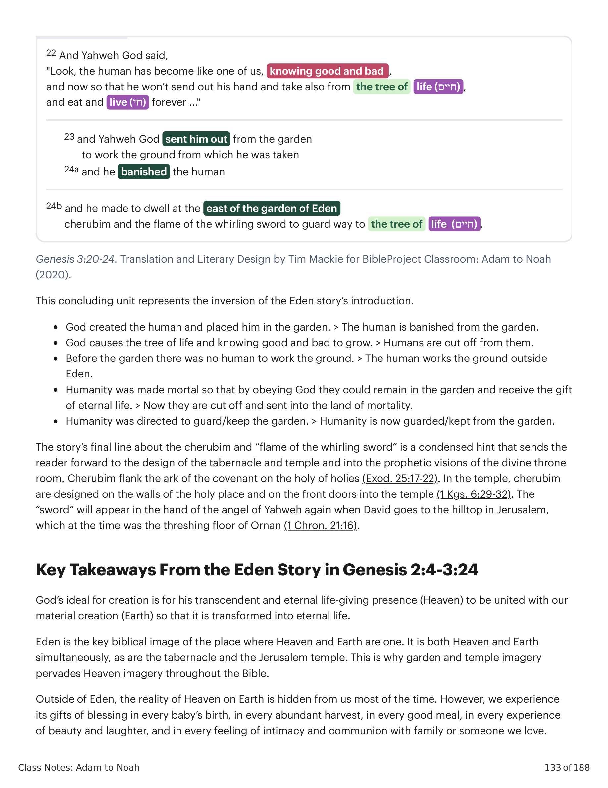

Estes dois versículos parecem colocados aqui aleatoriamente, mas na verdade estão estrategicamente localizados para criar uma moldura em torno de toda a narrativa do fracasso em Gênesis 3:1-19, combinando e invertendo múltiplos elementos de Gênesis 2:18-25.These two verses seem randomly placed here, but they are actually strategically located in order to create a frame around the entire fail narrative of Genesis 3:1-19 by matching and inverting multiple elements in Genesis 2:18-25.
| Genesis 2:18-25 | Genesis 3:1-19 | Genesis 3:20-21 |
|---|---|---|
| 1. Adão chama a mulher de "mulher" | A serpente, a mulher e o homem | 1. Adão chama a mulher de "Hawwah" |
| 2. Deus provê a mulher como um 'ezer (עזר) | 2. O engano do 'ezer (עזר) cria a necessidade de "pele" (עור) | |
| 3. Estão nus e não se envergonham | 3. A nudez humana é coberta por Deus | |
| 4. Humanidade em paz com os animais | 4. Um animal é morto para "vestir" os humanos |
Após o fracasso do homem e da mulher, a história conclui com estes dois breves detalhes. A nomeação da mulher em 2:23 agora é ampliada por um duplo trocadilho.After the failure of the man and woman, the story concludes with these two short details. The naming of the woman in 2:23 is now furthered by a dual wordplay.
Deus provê "túnicas de pele (עור)" para substituir as "roupas de folhas" que os humanos fizeram para esconder sua nudez uns dos outros. Esta última palavra ("túnicas de pele") é um trocadilho com a provisão de Deus da mulher como um livramento de ajuda para o homem (עזר).God provides "garments of skin (עור)" to replace the "leaf garments" the humans made to hide their nakedness from each other. This last word ("garments of skin") is a wordplay on God's provision of the woman as a deliverance of help for the man (עזר).
A provisão de roupas para os humanos acontece antes de sua expulsão do Éden e é retratada como um ato de generosidade divina em meio ao julgamento. Agora que os humanos tomaram a decisão irreversível, Deus acomoda sua situação não ideal e lhes concede um dom. E esta "túnica" (heb. ketonet / כתנת) não é apenas uma túnica, mas uma veste de honra (a túnica de sonhos multicolorida de José em Gn 37:3 também é uma ketonet).The provision of garments for the humans happens before their expulsion from Eden and is portrayed as an act of divine generosity in the midst of judgment. Now that the humans have made the irreversible decision, God accommodates their non-ideal situation and provides them with a gift. And this "garment" (Heb. ketonet / כתנת) is not just a tunic but a robe (Joseph's technicolor dream coat in Gen. 37:3 is a ketonet as well).
Esta cena também planta a semente de um motivo-chave no livro de Gênesis: o engano e as vestes. Na história do Éden, o engano da serpente sobre a mulher nua resulta em sua necessidade de uma veste. Vejamos este motivo em histórias bíblicas posteriores.This scene also plants the seed of a key motif in the book of Genesis: deception and garments. In the Eden story, the snake's deception of the naked woman results in her need for a garment. Let's look at this motif in later biblical stories.
Esta provisão de vestes para aquele que Deus exila do Éden também é invertida no sacerdócio de Israel. A eles também são designadas "vestes divinas" (heb. ketonet) por Deus, que cobrirão sua nudez quando servirem no altar ou entrarem no tabernáculo (Êx 21:26; 28:39-43).This provision of garments for the one God exiles from Eden is also reversed in Israel's priesthood. They are also assigned "divine garments (Heb. ketonet)" by God which will cover their nakedness when they work at the altar or enter the tabernacle (Exod. 21:26; 28:39-43).

Esta unidade conclusiva representa a inversão da introdução da história do Éden.This concluding unit represents the inversion of the Eden story's introduction.
A última linha da história sobre os querubins e a "chama da espada giratória" é uma pista condensada que envia o leitor adiante, para o design do tabernáculo e do templo, e para as visões proféticas da sala do trono divino. Querubins flanqueiam a arca da aliança no Santo dos Santos (Êx 25:17-22). No templo, querubins são desenhados nas paredes do lugar santo e nas portas de entrada para o templo (1 Rs 6:29-32). A "espada" aparecerá na mão do anjo de Yahweh novamente, quando Davi vai até o alto do monte em Jerusalém, que na época era a eira de Ornan (1 Cr 21:16).The story's final line about the cherubim and "flame of the whirling sword" is a condensed hint that sends the reader forward to the design of the tabernacle and temple and into the prophetic visions of the divine throne room. Cherubim flank the ark of the covenant on the holy of holies (Exod. 25:17-22). In the temple, cherubim are designed on the walls of the holy place and on the front doors into the temple (1 Kgs. 6:29-32). The "sword" will appear in the hand of the angel of Yahweh again when David goes to the hilltop in Jerusalem, which at the time was the threshing floor of Ornan (1 Chron. 21:16).
O ideal de Deus para a criação é que a sua presença transcendente e eterna que dá vida (o Céu) se una à nossa criação material (a Terra), de modo que ela seja transformada em vida eterna.God's ideal for creation is for his transcendent and eternal life-giving presence (Heaven) to be united with our material creation (Earth) so that it is transformed into eternal life.
O Éden é a imagem bíblica fundamental do lugar onde o Céu e a Terra são um. É tanto Céu quanto Terra simultaneamente, assim como o tabernáculo e o templo de Jerusalém. É por isso que a imagem de jardim e de templo permeia a imagem do Céu por toda a Bíblia.Eden is the key biblical image of the place where Heaven and Earth are one. It is both Heaven and Earth simultaneously, as are the tabernacle and the Jerusalem temple. This is why garden and temple imagery pervades Heaven imagery throughout the Bible.
Fora do Éden, a realidade do Céu na Terra está oculta de nós na maior parte do tempo. Contudo, experimentamos os seus dons de bênção em cada nascimento de um bebê, em cada colheita abundante, em cada boa refeição, em cada experiência de beleza e riso, e em cada sentimento de intimidade e comunhão com a família ou com alguém que amamos.Outside of Eden, the reality of Heaven on Earth is hidden from us most of the time. However, we experience its gifts of blessing in every baby's birth, in every abundant harvest, in every good meal, in every experience of beauty and laughter, and in every feeling of intimacy and communion with family or someone we love.
Estes dons do Éden são pequenos vislumbres da bondade última que permeiam o nosso mundo e apontam a humanidade para o seu Criador, se tiverem olhos para ver. A história de Gênesis 3 é mais sobre "o fracasso" do que "a queda". É sobre uma tentativa equivocada de tomar a sabedoria divina.These gifts of Eden are small tastes of ultimate goodness that pervade our world and point humanity to their creator if they have eyes to see. The story of Genesis 3 is more about "the fail" than "the fall." It is about a misguided attempt to seize divine wisdom.
"A sabedoria é boa, e podemos assumir com segurança que Deus não pretendeu retê-la da humanidade. Mas a verdadeira sabedoria deve ser adquirida por meio de um processo, geralmente através da instrução daqueles que são sábios. A queda define-se pelo fato de que Adão e Eva adquiriram sabedoria de forma ilegítima (Gn 3:22), tentando assim assumir o papel de Deus para si mesmos, em vez de, eventualmente, unirem-se a Deus em seu papel à medida que lhes era ensinada a sabedoria e se tornavam os vice-regentes plenamente funcionais de Deus, envolvidos no processo de trazer ordem. Se os seres humanos devem trabalhar ao lado de Deus para estender a ordem ('sujeitai' e 'dominai' [Gn 1:28]), precisam alcançar sabedoria, mas como dom de Deus, e não apoderando-se dela para uso autônomo. Se... desde o princípio as pessoas eram mortais, e a dor e o sofrimento já faziam parte de um cosmo ainda não plenamente ordenado, não podemos pensar na morte e no sofrimento como tendo sido impostos a nós pela malfeitoria de Adão e Eva... Em vez disso, podemos ter uma atitude muito mais caridosa para com Adão e Eva quando percebemos que não foi que eles iniciaram uma situação que não já existia; foi que falharam em alcançar uma solução... que estava ao seu alcance. Suas escolhas resultaram em seu fracasso em obter alívio em nosso favor. Seu fracasso significou que estamos condenados à morte e a um mundo desordenado cheio de pecado. Essas são consequências profundamente significativas para o que foi uma ofensa séria. Em contraste, Cristo foi capaz de alcançar o resultado desejado ali onde Adão e Eva falharam. Todos nós estamos condenados a morrer porque, quando pecaram, perdemos o acesso à árvore da vida. Portanto, estamos sujeitos à morte por causa do pecado. Cristo prosperou e de fato providenciou o remédio para o pecado e a morte. Alguns seguiriam essa mesma linha de raciocínio para sugerir que o que chamamos de pecado original é o resultado de nossos antepassados 'terem saído do programa' prematuramente. James Gaffney identifica essas abordagens como envolvendo a visão de que a nossa condição humana é subdesenvolvida, falhando em alcançar o objetivo pretendido porque quisemos fazê-lo ao nosso modo — 'não o paraíso perdido, mas, por assim dizer, o paraíso não alcançado.'""Wisdom is good, and we can safely assume that God did not intend to withhold it from humanity. But true wisdom must be acquired through a process, generally from instruction by those who are wise. The fall is defined by the fact that Adam and Eve acquired wisdom illegitimately (Gen. 3:22), thus trying to take God's role for themselves rather than eventually joining God in his role as they were taught wisdom and became the fully functional vice-regents of God involved in the process of bringing order. If humans are to work alongside of God in extending order ('subdue' and 'rule' [Gen. 1:28]), they need to attain wisdom, but as endowment from God, not by seizing it for autonomous use. If ... from the start people were mortal, and pain and suffering were already a part of a not yet fully ordered cosmos, we cannot think of death and suffering as having been foisted on us by Adam and Eve's malfeasance. ... Instead, we can have a much more charitable attitude toward Adam and Eve when we realize that it is not that they initiated a situation that was not already there; it is that they failed to achieve a solution ... that was in their reach. Their choices resulted in their failure to acquire relief on our behalf. Their failure meant that we are doomed to death and a disordered world full of sin. These are profoundly significant consequences for what was a serious offense. In contrast, Christ was able to achieve the desired result where Adam and Eve failed. We are all doomed to die because when they sinned we lost access to the tree of life. We are therefore subject to death because of sin. Christ succeeded and actually provided the remedy to sin and death. Some would follow this same line of reasoning to suggest that what we call original sin is the result of our ancestors "pulling out of the program" prematurely. James Gaffney identifies these approaches as involving a view that our human condition is underdeveloped, failing to achieve the intended goal because we wanted to do it our way—'not paradise lost, but, as it were, paradise ungained.'"
Walton, John (2015). O Mundo Perdido de Adão e Eva: Gênesis 2-3 e o Debate das Origens Humanas. IVP Academic.Walton, John (2015). The Lost World of Adam and Eve: Genesis 2-3 and the Human Origins Debate. IVP Academic.
O mal é uma presença semi-pessoal que causa dúvida sobre a bondade e as intenções do Criador, e compel e os humanos a declarar a si mesmos como o autor tanto de sua própria identidade quanto do bem e do mal. Isso resulta em uma ironia trágica, na qual os humanos entregam sua dignidade divina à criação, com seu apetite animalesco de sobrevivência e controle. A história estabelece o conflito principal da trama que impulsiona o resto da história bíblica: Deus quis governar a criação através de suas imagens humanas, mas agora elas estão em rebelião e causando caos e desordem no bom mundo de Deus. Qual é, então, a solução? Precisamos de um novo tipo de humano que possa fazer duas coisas que não podemos fazer por nós mesmos: lidar com o problema que a humanidade gerou, e restaurar a humanidade de volta ao seu papel ideal.Evil is a semi-personal presence that causes doubt about the creator's goodness and intentions, and it compels humans to declare themselves to be the author of both their own identity and of good and evil. This results in a tragic irony where humans give their divine dignity over to creation with its animal-like appetite for survival and control. The story sets up the main plot conflict that drives the rest of the biblical story: God wanted to rule creation through his human images, but now they are in rebellion and causing chaos and disorder in God's good world. So what's the solution? We need a new kind of human who can do two things we cannot do for ourselves: Deal with the problem humanity has generated, and restore humanity back to its ideal role.
Deus não para de trabalhar em e com a humanidade depois de baní-los do jardim. O que isso nos mostra sobre o coração de Deus? O que devemos esperar de Deus enquanto continuamos lendo Gênesis e o resto da Bíblia?God doesn't stop working in and with humanity after he banishes them from the garden. What does this show us about God's heart? What should we expect from God as we continue reading Genesis and the rest of the Bible?